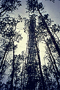
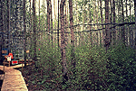

P.I.(s): Andrew Black -- University of British Columbia; George W. Thurtell -- University of Guelph
Co-I(s): Ken M. King, Paul M. Voroney. G.E. Kidd -- Univ. of Guelph; M.D. Novak -- Univ. of British Columbia
Objectives: To measure the fluxes of sensible (H) and latent heat (LE), momentum, CO2, and trace gases (CH4, CO, O3, and NO2) above the canopy of the SSA-OA stand in Prince Albert Park during the year and to investigate the processes controlling these fluxes. Fluxes were measured using the eddy correlation method with three-dimensional sonic anemometry and closed-path gas analysis (mainly tunable diode lasers (TDL) and open and closed path IRGAs). H and LE were also measured using the Bowen ratio/energy balance method. Below the overstory, H, LE and CO2 fluxes were measured using the eddy correlation method. Concentration profiles of CO2, H2O and the above trace gases were measured in and above the stand. Soil manipulation experiments were carried out to determine the response of microbial activity and gas production to changes in soil nitrate and carbohydrate levels. The flow of C and N through the litter/soil system was measured in situ using 13C and 15N substrates. This project is complementary to TF-2.
|  The flux tower at SSA-OA |  The base of the scaffold flux tower |
Objectives:
To measure the fluxes of heat, momentum, water vapor, CO2, CH4 and N2O above the hazel understory and above the old aspen forest in Prince Albert National Park, and to investigate the processes controlling these fluxes.
Types of Data Collected and Equipment Used:
An eddy correction system mounted at a height of 4 meters was used to measure the three wind velocity components u, v, w, air temperature (Solent anemometer/ thermometer), CO2 concentration (LI-COR infrared gas analyzer 6262) and water vapor density. Water vapor density was measured in two ways: closed-path (LI-COR 6262) and open-path (CSI krypton K20). The above measurements were used to calculate half-hourly fluxes of momentum, sensible heat, latent heat and CO2.
 Radiation measurements were made using a tram at the 4-m height. They are: net radiation (Swissteco S-1 and S-14 (miniature) net radiometers); incoming solar radiation and diffuse radiation (shaded and unshaded Kipp and Zonen CM-5 pyranometers); incoming PAR and outgoing PAR (LI-COR quantum sensor).
Radiation measurements were made using a tram at the 4-m height. They are: net radiation (Swissteco S-1 and S-14 (miniature) net radiometers); incoming solar radiation and diffuse radiation (shaded and unshaded Kipp and Zonen CM-5 pyranometers); incoming PAR and outgoing PAR (LI-COR quantum sensor).
Soil heat flux at a depth of 3 cm (G3, soil heat flux plates, Middleton Inst., Model F) and rate of heat storage change in the top 3 cm soil layer (M, nickel resistance wire integrating thermometer) were measured. Soil heat flux at soil surface (G0) was calculated using G0 = G3 + M.
Soil water content in the following surface soil layers: 0-3 cm, 3-6 cm and 6-10 cm, was measured gravimetrically every 2 days. Time domain reflectometry systems (Tektronix 1502B cable tester + Gabel & Associates moisture point) were also used to measure soil moisture to a depth of 4 feet, and mini-lysimeters were used to measured soil evaporation.
A LI-COR LAI-2000 plant canopy analyzer was used to determine separately aspen plant area index and hazel plant area index throughout the growing season.
CH4 and N2O fluxes above and below the aspen canopy were determined using the gradient method with a tunable diode laser (CSI Trace Gas Analysis System).
A static chamber was used to measure soil CO2 efflux throughout the growing season.
Also measured were aspen bole and hazel stem temperature, snow profile temperature and surface temperature of the snow and forest floor.
Place and Time of Measurements:
Old Aspen Tower Site, Prince Albert National Park, Southern Study Area. Oct. 13 - Nov. 13, 1993 & Apr.8 - Sep.20, 1994. For CH4 and N2O: Oct. 16 - Nov. 12, 1993 & Apr. 16 - Sep. 20 1993.
Known Problem or Caveats:
Soil temperature data missing (DOY 250-253); daytime CH4 and N2O data missing (DOY 106-109); Krypton replacement (DOY 144-146), data are questionable; some nighttime CO2 fluxes were strongly negative, users should be careful in interpreting the measurements.
Other Information:
General climate and above-aspen flux data can be found in the TF-2 BOREAS data submission.
TF Overview || TF-1 | TF-2 | TF-3 | TF-4 | TF-5 | TF-6 | TF-7 | TF-8 | TF-9 | TF-10 | TF-11
 Send a data request to the BOREAS Data Manager (BOREAS Investigators only)
Send a data request to the BOREAS Data Manager (BOREAS Investigators only)
E-Mail a comment on this page to the curator 
Send e-mail to Fred Huemmrich, the BORIS representative for the TF group
Return to the TF Overview
Return to the BOREAS Science Groups Overview
Return to the BOREAS Home Page
Last Updated: October 30, 1997
{kind=link}
{kind=link}